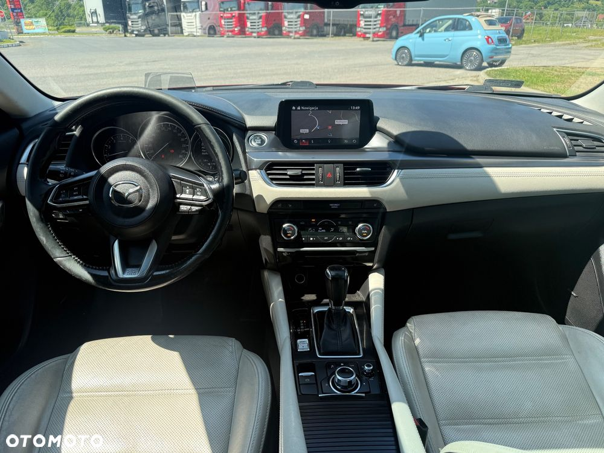
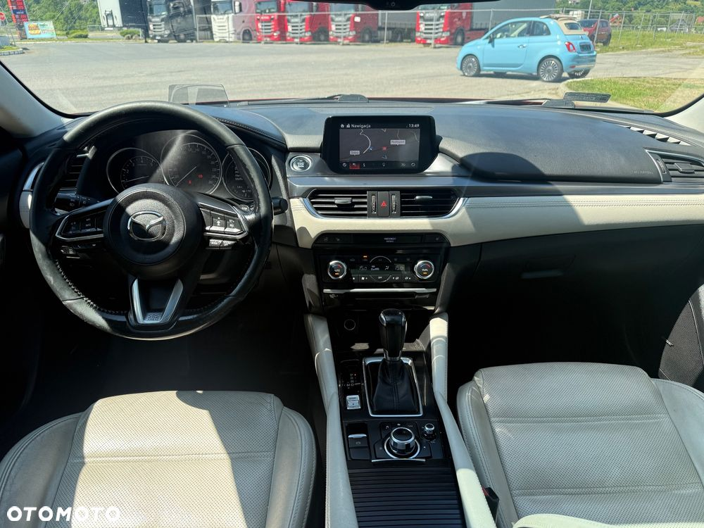

Mazda 6 Skyactiv Salon Polska Faktura VAT23%
Rocznik:2016
Wyposażenie
Kamera Cofania
Szyberdach
Tapicerka Skórzana
Alufelgi
Czujniki Parkowania
Fotele El. Regulowane + Pamięć Foteli
System Nawigacyjny
Kierownica Wielofunkcyjna
Tempomat Aktywny
Nagłośnienie BOSE
Podgrzewane Przednie Fotele
Podgrzewana Kierownica
Klimatyzacja Automatyczna
System START/STOP
Asystent Pasa
Regulacja Zawieszenia
Reflektory Bi-Ksenonowe
Światła Do Jazdy Dziennej
Wyświetlacz Hed-up
Pakiet Chrom
Przyciemniane Szyby
Samochód regularnie serwisowany wszystko sprawne gotowy do jazdy polecam
Zakup samochodu to zawsze ważna decyzja, wychodząc Państwu na przeciw Nasza Firma oferuje Przedłużoną Gwarancję dla nowych i używanych pojazdów.
CAR GWARANT to ubezpieczenie od awarii technicznych,
- okres ubezpieczenia od 1 do 24 miesięcy,
- wysokie limity kwotowe kosztów napraw
- brak listy warsztatów naprawczych, ubezpieczony decyduje gdzie naprawia auto, również ASO.
- naprawy zgodnie z technologią producenta, oryginalne części, materiały eksploatacyjne oraz koszty robocizny.
Zakres GWARANCJI Car Gwarant
• całodobowa obsługa - przez aplikację mobilną
• bezpłatny assisatnce na terenie całej Polski,
• samochód zastępczy na czas naprawy,
• szybki proces likwidacji usterki,
• dodatkowe zniżki na roczną polisę OC / AC,
• szeroki zakres pakietów gwarancji obejmujących:
- silnik,
- osprzęt silnika (m.in. turbosprężarka, rozrusznik),
- skrzynia biegów,
- koło dwumasowe,
- układ chłodzenia,
- układ hamulcowy,
- układ kierowniczy,
- układ napędowy,
- układ klimatyzacji,
- układ wydechowy (m.in. EGR, DPF),
- układ paliwowy (m.in. wtryskiwacze
Możliwość Kredytu i Leasingu Bez Opłaty Wstępnej Decyzja w 5 min
Więcej Info Pod Numerem
Treść ogłoszeń nie stanowi w rozumieniu prawa oferty handlowej, jest jedynie treścią informacyjną w myśl art. 66, § 1. Kodeksu Cywilnego. Sprzedający nie odpowiada za ewentualne błędy lub nieaktualność ogłoszenia


 
